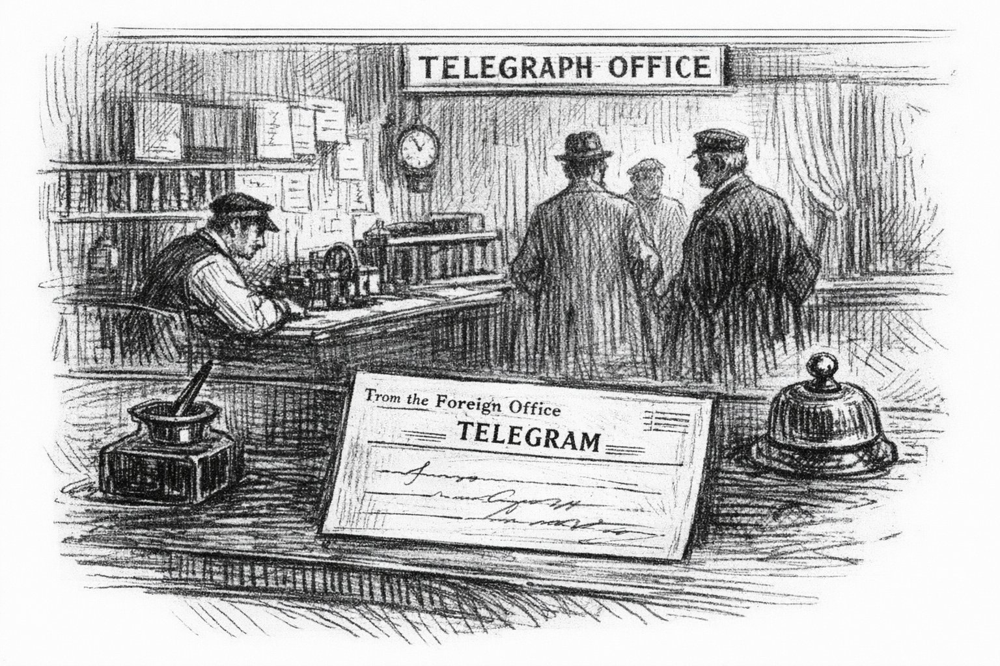

A Doyle mystery wrapped in a Wodehouse comedy —
and the origin story of the most unflappable manservant in English literature.
When a coded telegram arrives at the Foreign Office — apparently requesting that raisin biscuits be dispatched to a Brigadier in Suffolk — it is filed under miscellany and promptly forgotten. It takes Sherlock Holmes approximately four minutes to recognise it as the most significant communication to cross his desk in a year.
So begins an improbable week in the Suffolk countryside, where Holmes and Dr. Watson find themselves guests at Wooster Hall — a household presided over by a Brigadier whose primary intelligence concern is a large black dog, twins conducting field research of uncertain scientific value, a gardener whose twenty-year grievance about a disputed boundary has been cultivated with the same dedication he brings to his roses, and a twelve-year-old boy named Bertie who faces everything, including a colonial conspiracy, with the serene goodwill of someone who has genuinely never considered that things might not work out.
There is also a young manservant named Reggie, who says very little, notices everything, and appears to have the situation entirely in hand.
The Adventure of the Colonial Victory is the story of a week that changed nothing — except, very quietly, everything.
Read on Amazon ↗Twenty-three years have passed since that improbable week in Suffolk. The lanes are the same. The houses are the same. The people are not.
Two boys have come home to Wooster Hall for the summer — each carrying something they cannot name and will not share. Dahlia has decided that the Brigadier's library and the local lore are better than the nothing they've been doing. She is not wrong. She is also not prepared.
There is a diamond. There is a mystery. There is an anchor who says very little and notices everything — and has, once again, quietly had the situation in hand the entire time.
They've been more ghosts of the town than the Black Shuck. That is about to change.
In preparation at the scribe's desk.
Works in progress, in the order they interrupt each other.